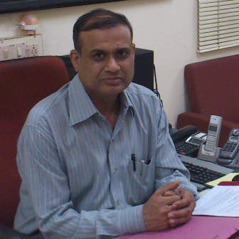

|

Message from Training & Placement OfficerIt gives us immense pleasure to extend to you a most cordial invitation to participate in the Campus Recruitment Programme of the Indian Institute of Technology (BHU), Varanasi. With an increasing thrust being placed on Institute-Industry Interaction, it is my sincere belief that your esteemed organization and IIT (BHU) Varanasi stand to gain immensely from this symbiotic relationship. Our Institute holds the pride of place being pioneers in the field of engineering and technical education in the country and has a glorious heritage. We have been continuously ranked among the elite by our peers and our constant pursuit of excellence has made our institute a focal point in technical education for students and faculty members alike. Admissions to the institute take place through the reputed Joint Entrance Examination (JEE). At IIT (BHU) Varanasi, we take care to groom our students according to the needs of the industry. We seek to open frontiers of knowledge and reveal new horizons of change, to broaden mindsets and to create positive attitudes in our students. Our students get a lot of industrial exposure by their frequent industrial visits. Besides, our undergraduate students undergo an eight-week training in their summer vacations in reputed industries/institutions/organizations (in India as well as abroad), as part of their academic requirements. I forward herewith our brochure, providing a profile of the Institute, as well as detailing the various programmes/courses offered by the Departments and Centres, and details of the contact persons. It would be our proud privilege to host you, and we would only be most delighted to be involved in such a partnership. More details of the Training & Placement Office with regards to placement policy and conduct and visiting organizations can be had from our website www.itbhu.ac.in/tpo Please feel free to contact the Training & Placement Office should you require any further information/clarification. Looking forward to a mutually beneficial relationship and with regards, Yours faithfully Professor Anil Kumar Agarwal Training & Placement Officer, IIT (BHU) Varanasi |